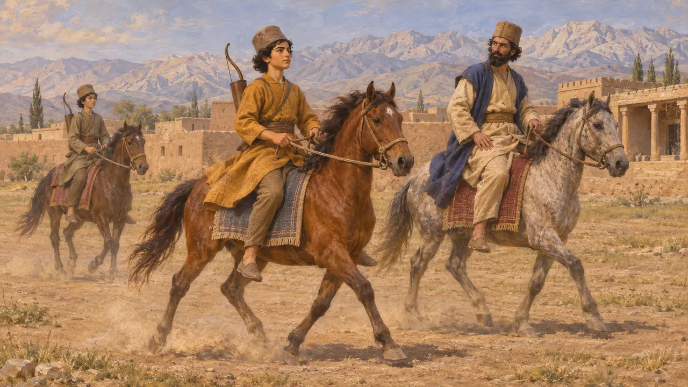
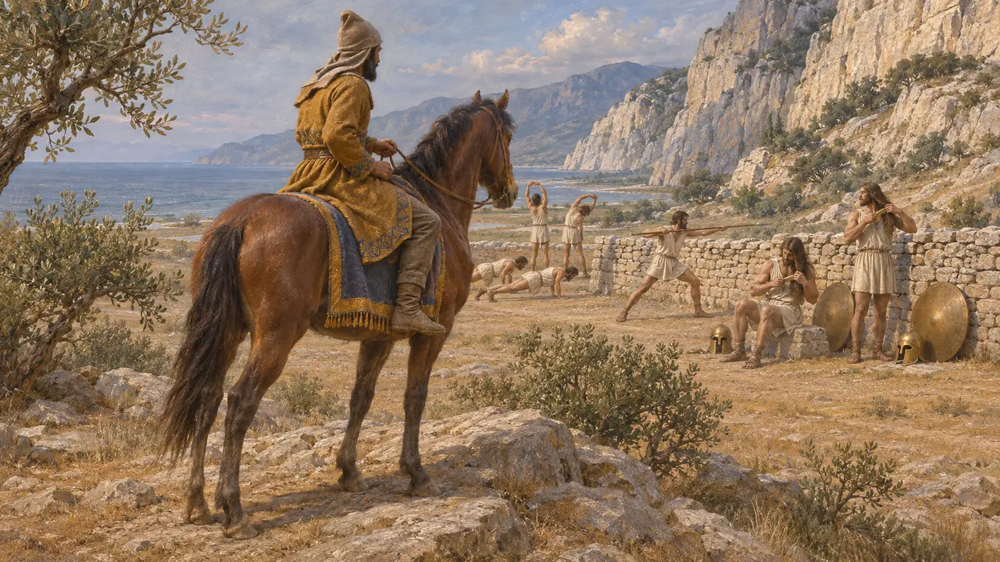
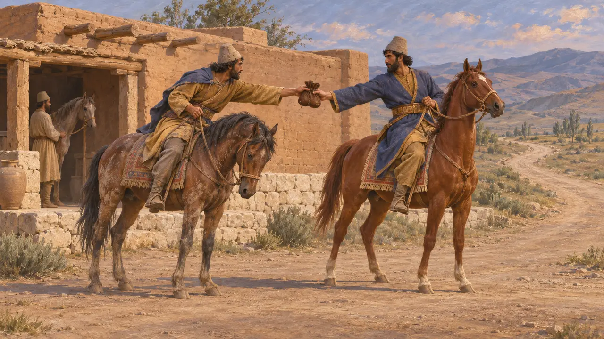
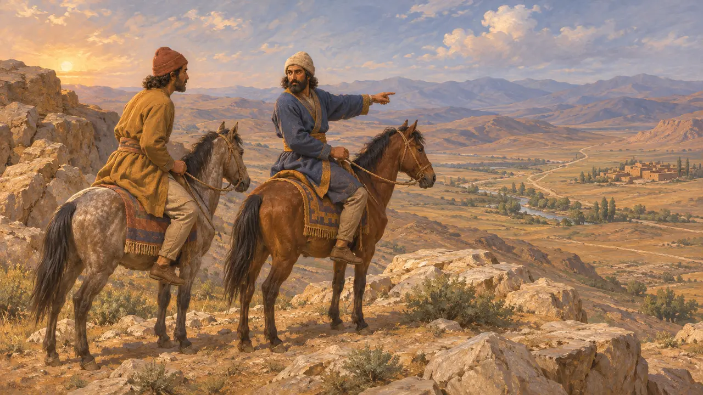

Ansiklopedi › Askerler ve gemiler

Scout
Mounted scouts of the King's armies, 6th-5th centuries BCE
A scout was a rider sent ahead of an army or out from a garrison to look and report. Persian boys were trained from childhood to ride and shoot, so a Persian army never lacked men who could cover ground fast. Herodotus' story of the horseman who rode up to the Spartans at Thermopylae shows the work: see, count and come back.
Oyunda: In the game a scout rides out by himself to the nearest land no one has seen, lifting the fog, and turns back when raiders come near. He fights only if you send him at a foe, and he does not count toward the garrison decree.

Trained to ride from boyhood
Antik anlatıHerodotus says Persian boys were taught three things from the age of five to twenty: to ride, to shoot the bow and to speak the truth. A people who rode so well had no lack of riders who could be sent far and fast with a message or a report.
Herodotus 1.136

See, count, report
Antik anlatıBefore attacking at Thermopylae, Xerxes sent a horseman to see what the Greeks were doing. The rider counted the men he could see outside the wall, watched Spartans exercising and combing their hair, and brought the report back. Xerxes could not understand it, and asked the exiled Spartan king Demaratus what it meant.
Herodotus 7.208-209

Relays of riders
Antik anlatıHerodotus describes the King's mounted messengers, a fresh man and horse posted for each day's stage, so that word passed from rider to rider without stopping. Nothing mortal travelled faster, he says. Scouts and messengers were not the same men, but the relays show how fast a report could reach a commander.
Herodotus 8.98

How scouting was organised
TartışmalıNo Persian source describes how the army organised its scouting, and the Greek writers mention scouts only in passing. Whether scouts were a standing body, picked riders from the cavalry, or local guides hired for a campaign is not known. The game's trained scout is a simplification.
P. Briant, From Cyrus to Alexander, 2002
Kaynaklar
- Herodotus 1.136; 7.208-209; 8.98
- P. Briant, From Cyrus to Alexander, 2002